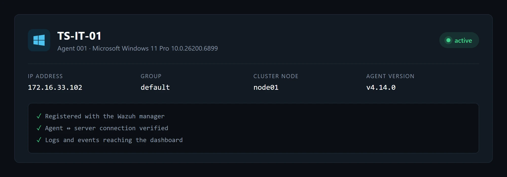

Log analysis
System and application logs from every machine, collected and correlated in one place.
(Experience · Value)
From reading logs machine by machine to one live security view of the whole fleet.
Cybersecurity Intern · January 2026

3 / 3 agents active
Value is a Tunisian company working in digital services, data and AI. Its IT Support team had no central place to see what was happening on its machines. I brought in Wazuh, an open-source SIEM and intrusion detection platform, and delivered a working monitoring server with Windows and Linux machines reporting to it in real time.
(Impact)
(The Problem)
Security relied on people noticing problems. Logs stayed on each machine, so incidents surfaced late and nobody had the full picture.
(What I Owned)
(Part 01)
One central server does the analysis. Lightweight agents on each machine stream logs and events to it over an encrypted channel, so adding a new machine means adding one more agent.
(Part 02)
With the agents in place, the IT team can follow six areas of security from one place.
System and application logs from every machine, collected and correlated in one place.
Rules and signatures that flag suspicious behavior and access attempts.
Changes to critical files and system settings are tracked and reported.
Known weaknesses in installed software, with the patches still to apply.
Incidents raised as they happen, with severity, so the team can react right away.
Dashboards and reports by machine, alert type or severity, to support decisions.
(Part 03)
(01 · First Check-in)
The first agent came online on TS-IT-01, a Windows 11 workstation. Once it showed up as active and its events reached the dashboard, I knew the pipeline worked before scaling it out.

(02 · Cross-Platform)
Windows, CentOS and Ubuntu machines report side by side, so one setup covers a mixed fleet. Each one passed the same four checks.
Dashboard views redrawn from the internship screenshots, with the same agents, systems and versions.
(Skills Proven)
Hands-on with an industry SIEM: agents, detection rules, alerts and dashboards.
Ran and maintained the central security server on a Linux VM.
Deployed and supported agents on Windows and two Linux distributions.
Requirements, work breakdown, use case and deployment diagrams.
Defined checks and proved each one before calling the work done.
Documented the whole project in a 26-page report for the company and school.
(What's Next)
The setup is built to grow: the next steps are rolling agents out across the rest of the company and turning on automated responses, so some threats are blocked without waiting for a person. This internship confirmed where I want to go: systems administration and cybersecurity.
(Tech Stack)
Open source, cross-platform and easy to extend to new machines.